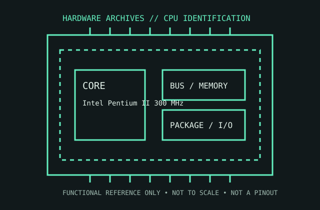

[ PENTIUM ERA PROCESSORS // IDENTIFIED COMPONENT ]
Intel Pentium II 300 MHz
The 300 MHz Klamath Pentium II packages the processor and its L2 cache on a Slot 1 Single Edge Contact cartridge.

MODEL IDENTIFICATION: Intel Pentium II 300 MHz. Read the full top marking/OPN, speed grade, package, and stepping from the physical part; do not transfer specifications across similarly named revisions.
Recorded specifications
| Cataloged part | Intel Pentium II 300 MHz |
|---|---|
| Era / family | Pentium II / Klamath generation, 1997; 300 MHz, 66 MHz bus version. |
| Key specifications | 300 MHz core; 66 MHz system bus; 32 KB L1 cache; 512 KB L2 cache on the cartridge, operating at half core frequency; 0.35 µm Klamath core; Slot 1 SEC package. |
| Interface / fit | Requires Slot 1 support for the Klamath core, 66 MHz bus, cartridge form factor, and suitable BIOS. Not a Socket 370 part; later Pentium II/III Slot 1 cartridges may use different bus and voltage requirements. |
| Variants / identification | This record is the 300 MHz Klamath with half-speed off-die L2 cache. Deschutes Pentium II revisions and later speeds use different process, voltage, and bus options. |
Compatibility and service notes
- Requires Slot 1 support for the Klamath core, 66 MHz bus, cartridge form factor, and suitable BIOS. Not a Socket 370 part; later Pentium II/III Slot 1 cartridges may use different bus and voltage requirements.
- This record is the 300 MHz Klamath with half-speed off-die L2 cache. Deschutes Pentium II revisions and later speeds use different process, voltage, and bus options.
- Inspect the cartridge connector and retention mechanism, and ensure the cooler contacts the cartridge correctly. Document motherboard revision and BIOS before testing; cartridge shell condition can conceal prior repairs.
- Before installation, compare the exact CPU marking with the motherboard maker’s support list, board revision, BIOS minimum, package/socket, power requirements, and memory type. Do not force a package into a socket.
Service & archival record
Inspect the cartridge connector and retention mechanism, and ensure the cooler contacts the cartridge correctly. Document motherboard revision and BIOS before testing; cartridge shell condition can conceal prior repairs.
For a collection record, photograph both sides, retain the full model/OPN and date/lot codes, describe package and contact condition, and record the tested motherboard revision, firmware, cooling, memory, and measured operating conditions. Separate measured observations from published limits.
Sources & further reading
- Intel Pentium II processor data sheet — Klamath cartridge specificationsModel-specific manufacturer, technical-document, or product-history reference; consult the exact device marking and board revision.
- Intel Slot 1 processor documentation — Single Edge Contact cartridge interfaceModel-specific manufacturer, technical-document, or product-history reference; consult the exact device marking and board revision.
- Intel Pentium II launch and product-history referenceModel-specific manufacturer, technical-document, or product-history reference; consult the exact device marking and board revision.
Third-party mirrors or historical document indexes may host manufacturer-authored manuals. Check document revision and exact model marking; board compatibility remains specific to its maker and firmware.